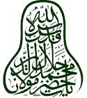

FÎHİ MÂ-FÎH
Çeviren:
Abdülbaki Gölpınarlı
RAHMÂN VE RAHİM ALLAH ADÎYLE; ONA DAYANIRIM BEN
1. BÖLÜM: "Bilginlerin kötüsü, beyleri ziyaret eden bilgindir; beylerin hayırlısı da bilginleri ziyaret eden bey. Ne güzel beydir yoksulun kapısındaki bey; ne kötü yoksuldur beyin kapısındaki yoksul."
Halk, bu sözün dış anlamını almıştır. Onlarca bilgin kişinin, bilginlerin kötülerinden olmaması için beylerin tapısına gitmemesi gerektir. Halbuki sözün anlamı, onların sandıkları gibi değildir. Asıl anlamı
şudur:
Bilginlerin kötüsü, beylerden yardım gören, beyler yüzünden düzelen, doğru yolu tutan kişidir. Beyler bana ihsanlarda bulunsunlar, beni saysınlar, bana mevki versinler kuruntusuyla, onlardan korkarak okumaya başlamıştır da beyler yüzünden işi düzene girmiştir; bilgisizliği bilgiye dönmüştür. Bilgin olunca da onların korkusundan, onların cezasından edep sahibi olur, ister-istemez doğru yolu tutar. Artık ne çeşit olursa olsun, ister görünüşte bey onun ziyaretine gelsin, ister o, beyi ziyarete gitsin, herhalde ziyaret eden odur, ziyaret edilense bey. Fakat bilgin, beyler yüzünden bilgiye sahip olmamışsa, önceden de, sonradan da bilgisi Tanrı için elde edilmişse o başka; balık nasıl sudan başka bir yerde yaşayamazsa, elinden başka bir şey gelmezse bu bilgin kişinin ele yolu-yordamı, ancak doğru yola gitmektir; bu, onun kendi huyundandır.
Bu çeşit bilgini yürüten, çekindiren akıldır. Zamanında, bilsinler-bilmesinler, herkes onun heybetinden çekinir; onun ışığından onun aksinden yardım ister. Böylesine bilgin, beyin tapısına gitse bile gerçekte ziyaret eden beydir, ziyaret edilen kendisi. Çünkü herhalde bey, aldığını ondan alır, yardımı ondan görür; oysa beye aldırış bile etmez. O bilgin güneş gibi heryana ışık salar; işi-gücü, herşeye, herkese bağıştır.
Güneşte taşları lâ'l, yakut, inci, mercan haline getirir; toprak dağları bakır, altın, gümüş madeni yapar; toprakları yeşertir, tazeleştirir; ağaçlara çeşit-çeşit meyveler bağışlar. Onun işi, sanatı vermektir, bağışlamaktır. Verir de almaz. Hani Araplarda söylene gelen bir atasözü vardır; "Biz vermeyi öğrendik, almayı öğrenmedik" derler; onun gibi. Hâsılı böylesine bilginler ziyaret edilenlerdir, beylerse ziyaret edenler.
Aklıma şu âyeti tefsîr etmek geldi. Söylediğim söze uygun da değil amma mademki aklıma geldi söyleyeyim de bitsin-gitsin.
Ulu Tanrı buyurur ki: "Ey Peygamber, ellerinizde bulunan tutsaklara de ki: Allah, yüreklerinizde hayırlı
bir niyet bulunduğunu bilirse size, sizden alınandan daha da hayırlısını verir, suçlarınızı örter. Allah, suçları
örten bir rahîmdir."
Bu âyetin inişine sebep şudur:
Tanrı rahmet etsin, Mustafâ, kâfirleri bozmuş, öldürmüş, yağmalamış, birçok tutsak tutmuş, ellerini, ayaklarını bağlatıp getirtmişti. O tutsaklardan biri de, Tanrı razı olsun, amcası Abbas'tı, o da onların arasındaydı. Bütün gece bağlanmış, hiçbir şeye güçleri yetmez, aşağılık bir halde ağlıyorlar, inliyorlardı.
Kendilerinden umut kesmişlerdi. Kılıcı, öldürülmeyi bekliyorlardı. Tanrı rahmet etsin, Mustafâ, onlara baktı
da güldü. Onlar görüyorsun ya dediler, onda da insanlık hali var; halbuki bende insanlık huyu yok diye dâvaya kalkışmıştı. Dâvası, gerçeğe aykırıymış. İşte bak, bize bakıyor, bizi bağlanmış, zincirlere vurulmuş bir
halde kendisine tutsak olmuş görüyor da seviniyor; tıpkı nefsine uyanlar gibi hani. Onlar da düşmana üst oldular, onları kahrolmuş gördüler mi sevinirler, çalıp çağırırlar.
Tanrı rahmet etsin, Mustafâ, içlerinden geçeni anladı da dedi ki:
Düşmanlarımı kahrettiğimi göreyim, yahut sizi ziyana uğramış göreyim de güleyim, sevineyim, hâşâ, bu benden uzak. Şu yüzden güleceğim geliyor: Can gözüyle görüyorum; bir topluluğu tutmuşum, külhandan cehennemden, o kapkara bacadan bağlarla, zincirlerle, çeke-sürüye, zorla cennete, Tanrı râzılığına, ölümsüz gül bahçesine götürüyorum da onlar, bizi bu tehlikeli yerden o gül bahçesine, o eminlik yurduna ne diye çekiyor, götürüyorsun diye ağlayıp bağırıyorlar; işte bu yüzden gülmem tutuyor. Bütün bunlarla beraber söylediğim sözü anlayacak, hali ap-açık görecek, can gözü daha sizde yok. Ulu Tanrı diyor ki: Tutsaklara söyle; de ki: Siz önce ordular topladınız; bir çok hazırlıklarda bulundunuz; erliğinize, yiğitliğinize, çokluğunuza güvendiniz. Kendi kendinize, Müslümanları şöyle edeceğiz, böyle kıracağız, kahredeceğiz dediniz. Gücünüzün-kuvvetinizin üstünde daha zorlu bir güç-kuvvet ıssı olduğunu görmüyordunuz. Yok ediciliğinizden daha üstün bir yok edicinin bulunduğunu bilmiyordunuz. Hâsılı şöyle olsun-böyle olsun diye ne tedbirde bulunduysanız hepsi de aksi çıktı. Şimdi korku içindesiniz amma hâlâ da o illetten tövbe etmediniz. Umudunuz yok, hâlâ da bir güç-kuvvet sahibi bulunduğunu görmüyorsunuz. Gücünüz-kuvvetiniz varken beni görmeniz, kendinizi bana karşı yok olmuş bilmeniz gerek ki işler kolaylaşsın. Korkuya düşünce benden umut kesmeyin ki sizi bu korkudan kurtarmaya, emin etmeye gücüm yeter. Ak öküzden kara öküz çıkaranın kara öküzden ak öküz çıkarmaya da gücü yeter.
"Geceyi uzatırsan, gündüzün bir kısmı gece olur; gündüzü uzatırsın, gecenin bir kısmı gündüz olur; ölüden diri çıkarırsın, diriden ölü belirtirsin" bu-yurulmuştur. Şimdi tutsaksınız; fakat tapımdan umut kesmeyin de elinizden tutayım sizin. "Tanrının rahmetinden umut kesmeyin; Tanrı rahmetinden kâfir olan topluluktan başkası umut kesmez."
Şimdi Ulu Tanrı buyuruyor ki: A tutsaklar, önceki yolunuzdan döner, Korkuda da, umutta da beni görür, herhalde kendinizi yok etmeme karşı yok olmuş sayarsanız sizi bu korkudan kurtarırım; sizden yağmalanan, elinizden çıkan her malı tekrar veririm size; hattâ kat-kat fazlasını, daha da iyisini verir, sizi bağışlarım; dünya devletine âhiret devletini de katarım.
Abbas, tövbe ettim, tuttuğum yoldan döndüm dedi. Mustafâ, Ulu Tanrı ettiğin dâvaya delil ister buyurdu. Beyit:
Aşk dâvasına girişmek kolay,
Fakat o dâvâya kesin delil gerek.
Abbas, hadi dedi, ne delil istiyorsan söyle. Mustafâ, Müslüman olduysan, Müslümanlığın iyiliğini istiyorsan, sende kalan malların bir kısmını müslüman ordusuna bağışla da Müslümanlık kuvvetlensin buyurdu. Abbas, a Tanrı Elçisi dedi, bende ne kaldı ki? Hepsini yağmaladılar; bir eski hasır bile bırakmadılar.
Tanrı rahmet etsin, Mustafâ, gördün mü buyurdu, gerçek değilsin tuttuğun yoldan dönmedin; ne kadar malın var, nerde sakladın, kime ısmarladın, nereye gömdün, gizledin, söyleyeyim mi? Abbas, hâşâ dedi.
Mustafâ buyurdu ki: Bu kadar malı anana vermedin mi; filân duvarın dibine gömmedin mi, ona, dönersem bana verirsin; esenlikle dönmezsem şu kadarını filân işe harcarsın, şu kadarını filâna verirsin, bu kadarı da senin olsun diye etraflıca vasiyette bulunmadın mı? Abbas bunu duyunca parmak kaldırdı, tam gerçeklikle inandı. Dedi ki: Ey gerçek peygamber, ben, Hâman gibi, Şeddad gibi daha başkaları gibi eski padişahlara nasıl felek yâr olduysa sana da yâr oldu, baht elverdi sanıyordum. Fakat bunu buyurdun ya, bildim-anladım ki bu devlet, o yandandır, Tanrı’dandır. Mustafâ buyurdu ki: Doğru söyledin bu sefer; içindeki şüphe ipi koptu, duydum; sesi kulağıma geldi. Canımın ta içinde gizli bir kulağım vardır, kim şüphe ve kâfirlik zünnârını koparırsa o gizli kulakla o koparma sesini duyarım, can kulağıma gelir. Şimdi doğru söyledin, iman ettin.
Mevlânâ buyurdu ki:
Bu tefsîri Emîr Pervâne'ye şunun için söyledim; dedim ki: Sen önce Müslümanlığa kalkan oldun.
Kendimi feda edeyim. Müslümanlığın kalması, Müslümanların çoğalması için aklımı, tedbirimi kul anayım da Müslümanlık kalksın dedin. Kendi fikrine güvendin. Tanrıyı görmedin, herşeyi Tanrı'dan bilmedin. Böyle olunca da Ulu Tanrı o sebebi, o çalışmayı, Müslümanlığın zararına sebep etti. Çünkü sen Tatar'la bir olmuşsun, Şam'lıları, Mısır’lıları yok etmek, İslâm ülkesini yıkmak için onlara yardım ediyorsun, Tanrı, Müslümanlığın kalkmasına sebep olan tedbiri, Müslümanlığa zarar vermeye sebep kıldı. Şu halde Tanrı'ya yüz tut, çünkü korkulacak bir hal bu. Sadakalar ver de seni, kötü bir hal olan şu korkudan kurtarsın. Ondan umut kesme. Öyle bir ibadetten böyle bir suça attı seni; fakat o ibadeti kendinden gördün de o yüzden suça
düştün. Şimdi suçta da umut kesme ondan; yalvar-yakar, o ibadetten suçu meydana getirenin,şu suçtan bir ibadet meydana getirmeye de gücü yeter. Sana bundan bir pişmanlık verir önüne sebepler çıkarır da gene Müslümanların çoğalmasına, Müslümanlığın kuvvetlenmesine çalışırsın. Umut kesme ki "Allanın rahmetinden, kâfir olan topluluktan başkası umut kesmez" Maksadım buydu, bunu anlasın da şu halde sadakalar versin, yalvarsın-yakarsın dedim; çünkü çok yüce bir halden aşağılık bir hale düştü; fakat bu halde de umutlanması gerek.
Ulu Tanrı aldatır; insanın, bana güzel bir tedbir elverdi, güzel bir iş belirdi, yüz gösterdi diye aldanmaması için güzel şekiller gösterir, içinde kötü şekiller vardır. Her görünen, göründüğü gibi olsaydı
Peygamber o kadar keskin, o kadar aydın, o kadar aydınlatıcı görüşüyle gene de "Herşey nasılsa öyle göster bana" der miydi? Güzel gösterirsin, gerçekte çirkindir. Çirkin gösterirsin, gerçekte güzeldir, özdür. Şu halde bize herşeyi, nasılsa öyle göster de tuzağa düşmeyelim, biteviye yol azıtmayalım. Şimdilik senin tedbirin güzel olsa, aydın olsa bile onun tedbirinden daha iyi olamaz; o, böyle derdi. Şimdi sen de her görünene her tedbire güvenme; yalvar-yakar, kork. Maksadım buydu benim. Oysa bu âyeti, bu tefsiri; şu anda ordular çekmedeyiz; onlara dayanmamak, bozguna uğrasak bile o korku, o çaresizlik halinde, gene ondan umut kesmemek gerek tarzında kendi meramınca tevil etti; sözü dileğine göre anladı. Benim maksadımsa söylediğim şeyleri anlatmaktı.
2. BÖLÜM - Birisi, Mevlânâ söz söylemiyor dedi. Dedim ki:
Sonucu o adamı yanıma benim hayalim çekti-getirdi. Şu hayalim, ona nasılsın, nicesin diye bir söz söylemedi. Sözsüz hayal, onu çekti buraya; hakıykatim onu sözsüz çeker de bir başka yere götürürse şaşılmaz bu işe.
Söz, gerçeğin gölgesidir, parça-buçuğudur. Gölge çekerse gerçek haydi-haydiye çeker. Söz bahanedir; insanı insana çeken can bağdaşmasıdır, söz değil. Birisi yüz binlerce mucize görse, söz duysa, kerametler seyretse kendisinde o peygamberle, yahut o erenle bir can bağdaşması yoksa fayda etmez. İnsanı
coşturan, kararsız bir hale getiren can bağdaşmasıdır. Saman çopünde kehlibarla birazcık can bağdaşması
olmasa hiç mi hiç kehlibara gitmez. Herşeydeki cinsin cinsiyle bağdaşması gizlidir, gözle görünmez.
Herşeyin hayali, insanı o şeye çeker. Bağ-bahçe hayali, insanı bağa-bahçeye çeker, dükkân hayali dükkâna.
Fakat bu hayal erde düzenler de gizlidir. Görmüyor musun ki filân yere gidersin, pişman olursun, hayır sanmıştım amma dersin, değilmiş. Bu hayaller, örtüdür, âdeta; örtü ardında birisi gizli. Hayaller ortadan kalktı da gerçekler hayal örtüsü olmadan yüz gösterdi mi kıyamet kopar orda. Hal böyle olunca da pişmanlık kalmaz. Seni çeken her gerçek odur, başka şey de ondan başka değildir, seni çeken gerçeğin ta kendisidir. "O gün, gizli şeyler meydana vurulur."
Bu sözün de yeri mi ki söylüyoruz. Gerçekte çeken birdir, fakat sayılı görünür. Görmez misin ki bir adam yüz şey ister, çeşit-çeşit dileklerde bulunur. Tutmaç isterim, börek isterim, helva isterim, kalya isterim, meyva isterim, hurma isterim der. Bu istek, sayı gösterir, sayıyı dile getirir amma temeli birdir, temeli açlıktır, o da birdir. Görmez misin? Bir şey yer de doyarsa bunların hiçbiri gerekmez der. Şu halde belli oldu ki on değilmiş, yüz değilmiş, birmiş "Sayılarını, ancak sınamak için yaptık". Halkın bu birdir, onlar yüz diye sayması, bir sınamadır. Yâni erene bir derler, şu çokluk halkaysa yüz derler, bin derler. Bu, pek büyük bir sınanmadır. Bu görüş, bu düştüğünüz düşünce, yâni halkı çok, onu bir görüşünüz, pek büyük bir sınamadır. “Sayılarını, ancak sınamak için yaptık" Hangi yüz, hangi elli, hangi altmış? Elsiz-ayaksız, akılsız-cansız bir bölük halk, tılsım gibi, cıva gibi oynayıp durmada. Şimdi onlara altmış, yahut yüz, yahut da bin dersin, bunaysa bir. Halbuki onlar hiçtir, buysa bindir, yüz bindir, milyondur. "Sayılınca azdır onlar, saldırdılar mı çok."
Padişahın biri, birisine yüz kişinin geçineceği kadar dünyalık vermişti. Ordudakiler bu işin aleyhinde bulunuyorlardı. Padişah kendî kendine, bir gün dedi, size gösteririm, neden bu işi yaptım, anlarsınız. Savaş
oldu, savaşta herkes kaçtı, yalnız oydu kılıç vuran. Padişah, işte dedi, o işi bunun için yaptım ben.
İnsanın, ayırdetme kabiliyetini garezlerden arıtması, bir din dostu araması gerek. Din, dostunu tanır amma siz ömrünüzü ayırdetme kabiliyetinden mahrum bir halde geçirdiniz de onun da ayırdetme kabiliyeti arıklaştı, din dostunu tanıyamıyor. Sen, ayırdetme kabiliyetinden mahrum olan şu bedeni besledin.
Ayırdetme, bir huydan ibarettir. Görmüyor musun? Delinin de bedeni var, eli-ayağı var, fakat ayırdetmesi yok. Her pis şeye el atıyor, tutuyor, yiyor. Ayırdetme, şu görünen bedende olsaydı pisi tutmazdı. Hâsılı
bildik ki ayırdetme, lâtif bir anlamdır, o da sendedir. Sense gece-gündüz, şu ayırdetme kabiliyetinden

mahrum olan bedeni beslemeye koyulmuşsun; bu, ancak bununla olur diyorsun; halbuki bu da onunla olur.
Nasıl oluyor da sen, hep şu bedeni geliştirmedesin, onuysa tamamiyle bir yana atmışsın. Bu beden, ayırdetme kabiliyetiyle durur, o kabiliyet bedenle durmaz. O ışık, şu söz, kulak ve bunlardan başka pencerelerden dışarıya vurur; bu pencereler olmasa başka pencerelerden baş çıkarır. Tıpkı şunun gibi hani: Bir ışık getirmişsin, güneşin önüne koymuşsun; güneşi bu ışıkla, bu rnumla görüyorum diyorsun. Hâşâ; mum getirmesen de güneş kendini gösterir. Muma ne ihtiyaç var?
Tanrıdan umut kesmemek gerek. "Gerçekten de kâfirlerden başkası Tanrı rahmetinden umut kesmez"
umut, eminlik yolunun başıdır. Yola gitmiyorsan bari yol başını gözle. Eğrilikler yaptım deme, doğruluğu tut sen, hiçbir eğrilik kalmaz. Doğruluk, Musa'nın sopasına benzer, o eğriliklerse büyüler gibidir. Doğruluk geldi mi hepsini yer-gider. Kötülük ettiysen kendine ettin, senin cefan, nerden ona erişecek?
Ş i i r
Bir kuş o dağa kondu, sonra uçtu-gitti;
Bak da gör, o dağda ne birşey fazlalaştı, ne birşey eksildi dağdan.
Doğru oldun mu bütün onlar kalmaz. Sakın umut kesme.
Padişahlarla düşüp kalkmada şu bakımdan tehlike yok: Gidecek baş zâti gider; ha bugün, ha yarın.
Fakat şu yüzden tehlike var ki onlar o makama geçtiler mi nefisleri kuvvetlenir, ejderha kesilirler. Onlarla görüşüp konuşan, onlarla dostluk dâvasına girişen, onların malını kabul eden bu adam da çaresiz onların isteklerine uygun söz söyler; onların kötü düşüncelerini, hoşlansınlar diye kabul eder; aykırı bir söz söyleyemez; bu yüzden tehlikelidir; çünkü dine ziyandır. Onların yanını yaptın mı temel olan öbür yan, sana yabancı olur. O yana ne kadar gidersen sevgilinin bulunduğu bu yan, o kadar yüz çevirir senden. Dünya ehliyle ne kadar uzlaşırsan o, o kadar kızar sana. "Kim, bir zalime yardım ederse Allah o zalimi, yardım eden kişiye musallat eder."
Yazıktır denize varıp da bir parçacık su içmeyi, yahut bir testi su almayı yeter bulmak. Denizden inciler, mücevherler, kuvvet veren yüz binlerce şeyler elde ederlerken denizden su alıp götürmenin ne değeri vardır ki? Aklı olanlar bununla övünür mü hiç, ne yapmıştır ki bu işi yapan? Hattâ dünya, bir köpüğüdür bu denizin; denizse erenlerin bilgileridir. İnci de nerede? Bu dünya, çer-cöple dolu bir köpüktür amma o dalgaların çıkıp batması, yürüyüp dönmesi, denizin coşup kabarması, köpürüp kükremesi yüzünden o köpük, bir güzellik elde eder. "Kadınları, oğul arı, yüklerle altınları-gümüşleri, damgalanmış cins atları, davarları, ekinleri isteyip Özleyiş sevgisi, bunlara ait sevgi, insanlar için bezenmiş, süslenmiştir."
Bezenmiş, süslenmiştir buyurdu ya, demek ki o güzel değildir. "Güzellik, eğretidir onda, başka bir yerdendir. O, altın suyuna batırılmış, yaldızlanmış kalp paradır; yâni bir köprücükten ibaret olan şu dünya kalptır, kadri, değeri yoktur; fakat biz onu altınla kaplamışız; çünkü "insanlar için bezenmiştir, süslenmiştir."
İnsan Tanrı usturlabıdır, fakat usturlabı bilmek için müneccim gerek. Tere satanda, yahut bakkalda da usturlap bulunabilir, fakat ondan ne fayda görür usturlupla göklerin hallerini, dönüşlerini, burçları, tesirlerini, inkılâpları, bunlardan başka daha birçok şeyleri ne bilir ki? Şu halde usturlap münecime fayda verir. "Kendini bilen rabbini bilir." Usturlap, nasıl göklerin hallerini gösteren bir aynaysa "And olsun ki Âdemoğullarını ululadık" diye anılan insanın varlığı da Tanrı usturlabıdır. Ulu Tanrı, onu, kendisini bilen, anlayan bir yaratık olarak yarattığından insan, kendi varlığının usrurlabından Tanrı tecellisini, neliksiz-niteliksiz güzelliği, soluktan- soluğa, bakıştan-bakışa görür, seyreder; o güzellik bu aynadan hiç mi hiç
ayrılmaz.
Üstün ve yüce Tanrının öylesine kulları vardır ki onlar, hikmet, bilgi ve anlayış, ululuklar elbiselerini giyinirler. Halkta onları görecek görüş yoktur amma onlar, pek kıskanç olduklarından bu elbiseleri giyerler de kendilerini gizlerler. Hani Mütenebbî,
Kadınlar ipekli elbiseleri süslenmek için değil,
Güzelliklerini korumak için giyindiler
der ya, tıpkı onun gibi işte.
3. BOLÜM - Birisi, gece-gündüz canım da, gönlüm de tapınızda hizmet etmede; fakat Moğol ar'la uğraşmaktan, onların işleriyle oyalanmaktan vakit bulup da tapınıza gelemiyorum dedi.
Mevlânâ buyurdu ki:
Bu işler de Tanrı işi; çünkü Müslümanların emin olmalarına, aman bulmalarına sebep olmada. Onların gönülleri olsun da birkaç Müslüman, emniyet içinde ibadete koyulsun diye kendinizi, malınızla, bedeninizle feda ettiniz. Şu halde bu da hayırlı bir iştir. Ulu Tanrı madem ki böyle bir hayırlı işe meyil vermiş, ona aşırı
rağbet göstermeniz Tanrı yardımına mazhar oluşunuza delildir. Fakat bu meyilde bir gevşeklik, bir usanç
hâsıl oldu mu bu, Tanrı yardımından mahrum oluşunuza delildir. Çünkü ulu Tanrı, usanca uğrayan adamın, o işin öylesine bir hayırlı işe sebep olmasını istemez. Hamam gibi hani. Hamam sıcaktır amma o sıcaklığı, külhanda yanan ot, odun, tezek gibi şeylerdendin. Ulu Tanrı, görünüşte kötü görünen, insanı tiksindiren sebepler meydana getirir; görünüşte kötüdür amma adamın hakkında yardımdır, lûtuftur. Hamam bunlarla kızar, halka da faydası dokunur.
Bu sırada dostlar geldiler, içeri girdiler. Özür getirerek buyurdu ki: Size kalkmıyorum, söz söylemiyorum, hal-hatır sormuyorum amma bu da ağırlamaktır. Çünkü herşeyi ağırlama, o vakte göre olur. Namazda babanın, kardeşin halini-hatırını sormak, onları ağırlamak yaraşmaz.
Namazdayken dostlara, yakınlara iltifat etmemek, iltifatın, okşamanın ta kendisidir. Çünkü onların yüzünden kendisini ibadetten, Tanrıya dalıştan ayırmaz, hatırı dağılmamış olur. Onlar da azaba, azara hak kazanmamış olurlar ki bu, iltifatın ta kendisidir, okşayışın ta kendisidir; çünkü onları azaba uğratacak şeyden çekinmiştir.
Birisi, Tanrıya namazdan daha yakın yol var mıdır diye sordu. Buyurdu ki: Gene namazdır, fakat namaz, yalnız şu görünen şekil değildir. Bu, namazın kalıbıdır; çünkü bu namazın önü vardır, sonu vardır. Önü, sonu olan herşey kalıptır; çünkü tekbir, namazın önüdür, selâm namazın sonu. Şehadet getirmek de yalnız dille söylenen söz değildir. Çünkü onun da önü vardır, sonu var.
Harfe, sese gelen herşeyin önü, sonu olur, o da görünüştür, kalıptır. Canıysa neliksiz-niteliksizdir, sonu yoktur; ne başlangıcı vardır, ne bitimi. Sonu-ucu şu namazı peygamberler icad etmişlerdir. Şimdi şu namazı
meydana çıkaran Peygamber şöyle der: "Allahla bir vaktim olur ki o vakte ne şeriatle gönderilmiş bir peygamber sığabilir, ne de Tanrıya yaklaştırılmış bir melek" Şu halde bildik-anladık ki namazın canı, yalnız şu görünen şekil değildir; dalıştır, kendinden geçiştir; şu halde bütün şekiller dışarıda kalır, oraya sığamaz.
Salt anlam olan Cebrail de sığmaz. Tanrı sırrını kutlasın, Mevlânâ Bahâeddin Veled'den gelen bir hikâye vardır: Bir gün ashap onu dalmış buldular. Namaz vakti de geldi-çattı. Bâzı müritler Mevlânâ, sözlerine aldırış bile etmedi. Onlar kalktılar, namaza koyuldular. İki mürit Şeyh'e uydu, namaza kalkmadı. Namaza durmayan o iki müritten birinin adı Hâcegî'ydi. Bu zat, can gözüyle ap-açık gördü ki imamla beraber namaza duran ashabın hepsi de kıbleye arka vermiş; yalnız Şeyh'e uyan o iki müridin yüzleri kıbleye karşı.
Çünkü Şeyh, bizden-benden geçmiştir, onun, o oluşu yok olmuş-gitmiştir; varlığı kalmamıştır; Tanrı ışığında helâk olmuştur; "ölmeden önce ölün" sırrına ermiştir. Artık o Tanrı ışığı haline gelmiştir. Kim Tanrı ışığından yüz çevirir de yüzünü duvara tutarsa kesin olarak kıbleyi arkasına almıştır; çünkü o şeyh, kıblenin de canı
kesilmiştir. Hani şu halk yüzlerini Kâ'be'ye çevirirler ya; o Kâ'be'yi bir peygamber yapmıştır. O evi, o yaptığı
için de o ev, dünyanın kıblesi olmuştur. Peki, o ev kıble olursa peygamber, haydi-haydi kıble olur-gider; çünkü o ev, o peygamber yüzünden kıble olmuştur.
Tanrı rahmet etsin, esenlikler versin, Mustafâ, bir gün, bir dostu, seni çağırdım, nasıl oldu da gelmedin diye azarladı. O dost, namaz kılıyordum dedi. Mustafâ dedi ki: Seni ben çağırmadım mı? Adam, çaresizim ben dedi. Mustafâ buyurdu ki:
Her vakit kendini çaresiz görürsen iyidir. Bunda kaldığın zaman nasıl kendini çaresiz görüyorsan, her halde, hattâ gücün-kuvvetin yeterken de çaresiz görmelisin. Çünkü senin gücünün- kuvvetinin üstünde bir güç-kuvvet var ve sen, her halde Hakka karşı yok olmuş-gitmişsin. İkiye bölünmüş değilsin sen ki kimi zaman çaren elinde olsun, kimi zaman çaresiz kalasın. Onun gücünü-kuvvetini gör de kendini her zaman çaresiz, elsiz-ayaksız, bunalmış yoksul olmuş bil. Arık bir adamın da yeri mi var, sözü mü olur? Arslanlar, kaplanlar, timsahlar bile onun karşısında hep çaresizdir, tir-tir titrerler. Gökler, yerler, hep çaresizdir, onun buyruğuna uymuştur. O pek büyük bir padişahtır; onun ışığı, ayın, güneşin ışığına benzemez ki o ışık varken herhangi birşey, olduğu yerde kalakalsın. Onun ışığı, perdesiz yüz gösterdi mi, ne gökyüzü kalır, ne yeryüzü... Ne güneş kalır, ne Ay. O padişahtan başka kimsecik kalmaz. "Herşey helâk olur, ancak onun hakikati kalır"
Padişahın biri, bir dervişe, Tanrı tapısından dedi, bir tecelliye uğrarsan, o tapıya bir yakınlık elverirse

sana, beni de an. Derviş, ben dedi, o tapıya ulaştım mı, o güzellik güneşi vurdu mu, kendimi bile hatırlayamam, seni nasıl anayım?
Fakat Ulu Tanrı, bir kulu seçti de kendisinden geçirdi mi, kim onun eteğini tutarsa, kim ondan muhtaç
olduğu birşeyi isterse, o ulu kişi, Tanrı katında onu anmasa, istemese de Hak, onu yerine getirir. Hani bir hikâye söylerler; bir padişah varmış, onun da pek özel, pek yakın bir kulu varmış. O kul, padişahın sarayına gideceği vakit ihtiyacı olanlar dertlerini anlatırlar, ona, padişaha sunsun diye yazılı kağıtlar verirlermiş. O da bu kâğıtları cüzdanına kormuş. Fakat padişahın tapısına var di mı, padişahın güzelliğinin ışığı o kula vururmuş da kul, padişahın karşısında kendinden geçer-gidermiş. Padişahsa benim güzelliğime dalıp giden kulumun nesi var-nesi yok diye âşıkçasına onun göğsünü, cebini yoklar, cüzdanını ararmış. Derken o yazdı
kâğıtları bulur, neler yazılmışsa hepsini yazar, tekrar kâğıtları cüzdanına kormuş. Böylece o söylemeden herkesin ihtiyacını giderir, bir tanesini bile reddetmezmiş. Hattâ dileklerini kat-kat, dilediklerinden de fazla verirmiş. Aklı başında olan, ihtiyacı olanların dileklerini padişaha söyleyebilir başka kulların yüz tane dileklerinden bir tanesini bile arada-sırada yerine getirirmiş.
4. BÖLÜM - Birisi, burada birşey unutmuşum dedi. (Mevlânâ) buyurdu ki: Dünyada unutulmaması gereken birşey var. Herşeyi unutsan da onu unutmasan korku yok. Fakat herşeyi yerine getirsen, hatırlasan, unutmasan da onu unutsan hiçbir şey yapmamış olursun. Hani bir padişah seni belli bir iş için bir köye yollasa, sen de gitsen de o işten başka yüzlerce iş basarsan, hangi iş
için gittiysen onu yapmadın, başarmadın ya, hiçbir iş başarmamış sayılırsın. Şu halde insan dünyaya bir tek iş için gelmiştir, maksat odur. Onu başarmadı mı, hiçbir iş başarmamış demektir. "Gerçekten de biz, arzettik emâneti göklere ve yeryüzüne ve dağlara. Derken onlar, onu yüklenmekten çekindiler ve ondan korktular ve onu yükledik insana; şüphe yok ki çok zalim oldu, çok bilgisiz bir hale geldi o." O emâneti göklere arzettik, kabul edemedi. Bir bak da gör, göklerden aklı şaşırtan ne işler meydana gelmede. Taşları
l'âl, yakut yapıyor; dağları altın, gümüş madeni haline getiriyor. Bitkileri, yeryüzünü coşturuyor, diriltiyor, ölümsüz cennete döndürüyor. Yeryüzü de tohumları benimsiyor, meyveler veriyor, ayıpları örtüyor, anlatılmasına imkân bulunmayan yüz binlerce şaşılacak işler başarıyor, şaşılacak şeyler meydana getiriyor.
Dağlar da çeşit-çeşit madenler veriyor. Bütün bunları yapıyorlar, yapıyorlar amma onlardan o bir tek iş
meydana gelmiyor da o tek işi insan görüyor, başarıyor, "And olsun ki Ademoğul arını ululadık" dedi,
"Göğü, yeri aluladık" demedi. Şu halde insanın elinden bir iş geliyor ki ne göklerin elinden geliyor o iş, ne yerlerin, ne dağların. O işi de gördü mü, onda ne zalimlik kalıyor, ne bilgisizlik. Amma sen, o işi görmüyorsam bunca iş görüyorum ya dersin; dersin amma seni öbür işler için yaratmadılar ki. Bu, şuna benzer: Padişahların hazinelerinde bulunabilen, değer biçilmez bir çelik Hint kılıcını tutmuşsun da kokmuş
öküz etine satır olarak kullanıyor, sonra da boşu-boşuna bırakmadım ya, böylesine bir işe kullanıyorum onu diyorsun. Yahut da zerresiyle yüzlerce tencere alınabilen bir altın tencereyi getirmişsin, içinde şalgam pişiriyorsun. Yahut da mücevherlerle bezenmiş bir bıçağı kırık bir kabağa mıh yapmışsın da diyorsun ki; İş
görüyorum; kabağı ona asıyorum, şu bıçağı öylece bırakmıyorum ya. Acınacak, gülünecek işler değil de nedir bunlar? O kabak, bir pul değerindeki bir tahta, yahut demir çiviye de asılabilirken yüz dinarlık bıçağı
bu işe kul anmak, akıl işi midir ki?
Ulu Tanrı, sana pek büyük bir değer vermiştir. Buyurdu ki: "Gerçekten de Al ah, cennet karşılığı olarak inananların canlarını, mal arını satın almıştır."
Değer bakımından iki dünyadan da artıksın;
Fakat neyleyeyim ki değerini sen bilmiyorsun
Kendini ucuz satma; çünkü değerin pek fazla senin.
Ulu Tanrı buyuruyor ki: Sizi de, soluklarınızı da, vakitlerinizi de, mallarınızı da, zamanınızı da satın aldım ben; bana harcarsanız, bana verirseniz karşılığı ölümsüz cennettir; değerin budur işte bence. Fakat sen, tutar da kendini cehenneme satarsan kendine zulmetmiş olursun. Hani o yüz dinarlık bıçağı duvara saplayıp ona bir kabak, yahut bir testi asan kişi gibi.
Şimdi gelelim sözümüze.
Bahane getiriyor da ben kendimi yüce işlere harcamadayım. Fıkıh, hikmet, mantık, nücûm, tıp, daha
da başka bilgiler öğreniyorum diyorsun. Sonucu, bunların hepsi de senin içindir. Fıkıh öğreniyorsan kimse elinden ekmeğini kapmasın, elbiseni soymasın, seni öldürmesin de sağ-esen kalasın diye öğreniyorsun.
Yıldız bilgisini öğreniyorsan gökyüzünün hallerini, yıldızların yeryüzüne tesirlerini anlamak, yeryüzünde ucuzluk mu olacak, pahalılık mı; eminlik mi hüküm sürecek, korku mu; bilmek için öğreniyorsun; bunların hepsi de sana ait. Yıldız kutlu olur, kutsuz olur, senin talihinle ilgiliyse bu da senin için. Düşünürsen anlarsın ki temel sensin, onların hepsi de senin parça-buçuğun. Parça-buçuğunda bunca yayılış, bunca şaşılacak şeyler, bunca şaşılacak haller, sonsuz âlemler olursa artık var da gör, sen asılsın, sen de ne haller var. Çünkü parça-buçuklarında bile can âleminde ne çıkışlar var, ne inişler var, ne mutluluklar var, ne kutsuzluklar var, faydalar var, zararlar var. Hani, filân canda şu Özellik var, ondan şu iş meydana gelir, filân şu işe yarar dersin ya.
Senin şu uykudan, şu yiyip içmeden başka bir gıdan daha var. "Rabbime konuk olurum, o beni doyurur, suvarır" denmiştir ya. Bu dünyada o gıdayı unutmuşsun da şu gıdaya dalıp gitmişsin; gece-gündüz bedeni beslemedesin. Sonucu şu beden, atındır senin, bu dünya da o atın ahırı. Atın gıdası, ata binene gıda olamaz; onun da kendisine göre gizli bir uykusu, gizli bir gıdası, gizli bir beslenmesi var. Fakat sana hayvanlık üst olmuş da atın başucunda, atların ahırında kalakalmışsın; ölümsüzlük dünyasının padişahlarının, beylerinin safında yerin yok. Gönlün orda amma beden üst olmuş da o yüzden gönlün de bedenin buyruğuna uymuş, ona tutsak olup kalmış. Hani Mecnun, Leylâ'nın bulunduğu yere giderken aklı başında olunca deveyi o tarafa sürerdi. Fakat bir soluk da Leylâ'ya daldı mı
kendisini de unuturdu, deveyi de. Devenin de köyde bir köşesi vardı. Fırsat buldu mu geri döner, köye giderdi. Mecnun kendine geldi mi bir de bakar, görürdü ki iki günlük yolu gerisin-geriye dönmüş-gitmiş.
Böylece üç ay yollarda kaldı da bu deve, başıma belâ oldu diye bağırıp deveden yere atladı, yaya olarak yürümeye koyuldu.
Şiir:
Devemin dileği geride, benim dileğim ilerde;
Dilekte onunla benim aramda ayrılık var.
(Mevlânâ) buyurdu ki:
Tanrı sırrını kutlasın Seyyid Burhâneddîn-i Muhakkik söz söyler, sohbet ederken birisi, senin medhini filândan duydum dedi. Seyyid, bir göreyim, bakayım buyurdu, o filân da kim? Kimin nesi? Beni tanıyacak, övecek bir derecede mi? Beni sözle tanıdıysa tanımamış demektir. Çünkü bu söz kalmaz; bu harf, bu ses kalmaz. Bu dudak, bu ağız kalmaz. Bunların hepsi de arazdır. İşimle tanıdıysa gene böyle. Yok, beni zâtımla tanıdıysa o vakit anlarım-bilirim ki o, beni övebilir, o övüş, bana aittir, beni övüştür.
Hikâye: Bu, şuna benzer hani. Derler, anlatırlar ya; padişahın biri, oğlunu, yıldız, remil bilgileriyle başka bilgileri öğrenmesi için hünerli bir topluluğa vermişti. Çocuk, pek aptal olmakla beraber bu bilgileri elde etmiş, tam usta olmuştu. Bir gün padişah, yüzüğünü avucuna aldı, oğlunu sınamak için gel dedi, söyle bakalım, avucumda ne var? Çocuk, avucundaki dedi, yuvarlak, sarı, ortası boş. Padişah, doğru buldun dedi, peki, söyle bakalım, bu ne çeşit birşey, ne olabilir? Çocuk kalbur olacak dedi. Padişah dedi ki: Akılları
şaşırtacak kadar ince vasıflarını bilgi kuvvetiyle bildin de kalburun avuca sığamayacağını nasıl bilemedin?
Şimdi zamane bilginleri de böyledir işte. Bilgilerde kılı kırk yararlar, kendilerine ait olmayan şeyleri iyiden-iyiye bellemişlerdir; onları iyice kavramışlardır. Fakat asıl önemli olan, bütün bunlardan fazla kendilerine yakın bulunan, kendi varlıklarıdır; kendi-kendilerini bilmezler. Herşeye helâldir, haramdır diye hüküm verirler, bu caizdir, o caiz değildir, şu helâldir, şu haramdır diye hükmederler de kendileri helâl midir, yoksa haram mı; caiz midir, değil mi; temiz midir, pis mi; onu bilmezler. Şu içi boş oluş, sarılık, şekil, yuvarlaklık, yüzün için eğretidir. Yüzüğü ateşe attın mı bunların hiçbiri kalmaz; hepsinden arı olan özü, zâtı
kalır. İşte herşeyin vasfını söylemek, bilgilere, işlere, sözlere ait övüşlerde bulunmak da böyledir; buna benzer; bütün bunlardan sonra baki kalan zâtiyle ilgisi yoktur bunların. Onların övüşleri şuna benzer; Hep bunları söylerler, anlatırlar da sonunda, avuçtaki kalburdur hükmüne varırlar; çünkü asıl olan şeyden haberleri yoktur.
Meselâ ben kuşum, duduyum, yahut bülbül. Bana, bir başka türlü öt derlerse ötemem. Çünkü dilim, budur benim, başka türlü söz söyleyemem ben. Bu, şunun aksinedir amma. Birisi kuşların ötüşünü taklit eder, onlar gibi öter, fakat kuş değildir, kuşların düşmanıdır, avcısıdır o. Öter, şakır; maksadı, kuşların kendisini kuş sanmalarını sağlamaktır. Ona, başka türlü seslen deseler seslenebilir; çünkü bu ötüş, onun ötüşü değildir, eğretidir onda; başka türlü ses de çıkarabilir o. Çünkü o, insanların kumaşlarını çalmak, her evden bir başka kumaş göstermek için öğrenmiştir bunu.

5. BÖLÜM - Dedi ki :
Bu ne lûtuftur ki Mevlânâ şereflendirdi bizi; hiç beklemezdim; gönlümden bile geçmezdi; buna lâyık da değilim. Benim gece-gündüz el kavuşturup onun kul arının-kölelerinin safında bulunmam gerekti; halbuki ona bile lâyık değilim hâlâ. Bu ne lûtuf?
(Mevlânâ) buyurdu ki: Bütün bunlar, himmetinizin yüceliğinden. Yüce, büyük bir dereceniz var. Ağır, yüce işlere koyulmuşsunuz. Himmetinizin yüceliği yüzünden gene de kendinizi kusurlu görüyorsunuz; buna razı olmuyorsunuz; kendinize birçok şeyleri gerekli biliyorsunuz. Gönlümüz daima tapınızda; fakat, bedenle de şereflenmeyi diledik. Fakat bedenin de pek büyük bir itibarı var; hattâ itibarın da yeri mi? Beden, özle ortak. Özsüz beden, nasıl bir işe yaramazsa bedensiz öz de bir işe yaramaz. Hani tohumu, kabuksuz olarak yere ekersen baş vermez, tutmaz; fakat kabuğuyla ekersen tutar, büyük bir ağaç olur. Şu halde bu bakımdan bedenin de büyük bir kadri var; böyle de olması gerek zâti. Onsuz bir iş görülemez; hiçbir maksada ulaşılamaz; evet, val ahi de böyledir bu. Asıl, anlamı bilene, anlam haline gelene göre anlamdır.
Hani derler ya "İki rek'at namaz, dünyadan da hayırlıdır, dünyadakilerden de." Amma bu, herkese göre değil; birisi olsa da dünya yüzünde ne varsa hepsine sahip olsa, bütün dünyanın malına-mülküne sahipken hepsi elinden çıksa, iki rek'at namazını kaçırmak, ona bundan da daha zor gelirse işte o kişiye göredir bu.
Dervişin biri, bir padişahın yanına vardı. Padişah ona, ey zâhit dedi. Derviş, zâhit sensin dedi. Padişah, ben nasıl zâhid olabilirim ki dedi, bütün dünya benim. Derviş, hayır dedi, ters görüyorsun sen. Dünya da, âhiret de, bütün mal-mülk de benim, âlemi ben zaptetmişim; bir lokmayla bir hırkayı yeter bulan sensin.
"Artık nereye dönerseniz dönün, Allahın zâtına dönersiniz." Bu, boyuna böyledir, tecelli hiç kesilmez, sonsuzdur, ölümsüzdür. Âşıklar, kendilerini o zâta feda etmişlerdir, karşılık da istemezler. Âşıklardan başkalarıysa yayılan hayvanlara benzerler.
Buyurdu ki: Yayılan hayvanlardır amma kendilerine nimet verilmeye de lâyıktır bunlar. Ahırdadır onlar amma ahır sahibinin makbulüdür onlar. Dilerse içlerinden birini alır, has ahırına götürür. Hani önceden yoktu, onu varlığa getirdi. Varlık tavlasından cansızlar arasına getirdi; cansızlar tavlasından bitkiler tavlasına, bitkilikten hayvanlığa, hayvanlıktan insanlığı, insanlıktan da melekliğe getirdi; bunun da sonu yoktur zâti. Bütün bunları da, onun bu çeşit pek çok, birbirinden yüce tavlaları olduğunu ikrar etmen için gösterdi. "Elbette geçeceksiniz bir halden bir hale; artık ne oluyor onlara ki inanmıyorlar?" Bunu, ilerdeki katları ikrar etmen için gösterdim, inkâr edip var olan budur ancak demen için değil. Bir usta, sanatını, hünerini, halkı kendisine inandırmak, göstermediği başka hünerlerine de ikrar edip var olan budur ancak demen için değil. Bir usta, sanatını, hünerini, halkı kendisine inandırmak, göstermediği başka hünerlerine de ikrar ettirmek, inandırmak için gösterir. Hani padişah da, kendisinden daha başka şeyler de istesinler, umsunlar, bu umutlarla keseler örsünler, diksinler diye bağışlarda, ihsanlarda bulunur. İşte bu, bu kadardır, padişah artık başka birşey vermez; verip vereceği budur ancak desinler diye değil. Hattâ padişah, birisinin böyle diyeceğini, bu düşünceye kapılacağını bilse ona asla ihsanda bulunmaz.
Zâhid ona derler ki işin sonunu görür, dünya ehliyse ahiri görür. Fakat Tanrıya tam yaklaşmış arifler, ne sonu görürler, ne ahiri. Onlar, öne bakarlar da her işin başlangıcını bilirler. Hani bilen biri buğday eker; bilir ki buğday bitecektir, buğday biçecektir o. Sonu, önceden görmüştür. Arpa, pirinç, başka şeyler eken de böyle. Madem ki önü gördü, sona bakmaz artık; bütün sonlar, önceden malûmdur ona; fakat bunlar azdır. Sonu görenlerse orta hallilerdir. Ahırdakilere gelince yayılan hayvanlardır.
İnsana yolu gösteren derttir, hem de her işte. İnsan, hangi işe koyulura koyulsun, o işin derdi, o işin hevesi, aşkı, gönlünde doğmazsa adam, o işe girişemez; o iş, dertsiz kolay gelmez ona. İster dünya olsun, ister âhiret... İster alış-veriş olsun, ister padişahlık... İster bilgi olsun, ister yıldız; isterse başkası; hepsi de böyledir. Meryem de doğum ağrısı başlamadan baht ağacının yanına gitmedi. "Doğum ağrısı, onu hurma ağacının dibine sevk etti." Onu, ağaca götüren o dertti de kuru ağaç meyve verdi. Beden Meryem'e benzer.
Her birimizin bir Îsâ'sı var. Bizde dert meydana gelirse Îsâ'mız doğar; fakat dert olmazsa Îsâ, geldiği o gizli yoldan gider, gene aslına kavuşur; ancak biz mahrum kalırız; faydalanamayız ondan.
Can, iç âlemde yokluk-yoksulluk içinde; tabiat dışarda nimetlere gark olmuş
Şeytan, yiyip içmeden mîde fesâdına uğramış, Cemşîd'se daha sabah kahvaltısı bileetmemiş.

Mesîh'in yeryüzündeykeni hastalığını tedâvi ettir;
Mesîh göğe ağmaya koyuldu mu derman, elden çıkar-gider.
6. BÖLÜM - Bu söz, anlaması için söze muhtaç olan kişiyedir. Fakat söz söylenmeden de anlayan kişiye söz söylemeye hacet mi var? Gökler, yerler, anlayan kişiye hep sözdür. Bunların hepsi de "ol der, oluverir" sözüyle bildirildiği gibi sözden doğmuştur. Yavaş söylenen sözü bile işiten kişiye anlatmaya koyulmanın, bar-bar bağırmanın ne lüzumu var? ,
Bir Arap şâiri, padişahın birinin tapısına geldi. Padişah Türk'tü, Farsça bile bilmiyordu. Şâir, padişaha arapça pek güzel bir kaside düzmüştü. Padişah tahtına oturmuştu. Bütün dîvan ehli huzurdaydı. Beyler, vezirler, teşrifata göre sıralanmıştı. Şâir, ayağa kalktı. Getirdiği kasideyi okumaya başladı. Padişah beğenilecek yerlerde başını sallıyor, şaşılması gereken yerde şaşkınlık gösteriyor, gönül alçaklığı
gösterilmesi gereken yerlerde iltifatlarda bulunuyordu. Dîvan ehli şaşırdılar. Padişahımızın arapça bir söz bile bilmezdi; tam yerinde nasıl oluyor da başını sallıyor; yoksa arapça biliyordu da bunca yıldır bizden mi gizliyordu; arapça edebe aykırı bir söz söylediysek vay bizim halimize diyorlardı..Padişahın pek sevdiği bir kölesi vardır. Ona at verdiler, katır verdiler, mal verdiler; bir o kadar daha vermeyi de boyunlarına aldılar.
Bize şu hali bildir, padişah arapça biliyor mu, bilmiyor mu? Tam yerinde nasıl baş sal ıyordu; yoksa bu, keramet miydi, ilham mıydı, öğren de haber ver bize dediler.
Köle bir gün fırsat buldu. Ava gitmişlerdi, birçok av avlanmıştı. Padişahı memnun gördü, hali sordu.
Padişah güldü de vallahi dedi, ben arapça bilmem; amma başımı sallıyordum, çünkü o şi rden maksadı
nedir, onu anlıyordum da başımı sallıyor, anlıyor, beğeniyordum.
Artık anlaşıldı ya, temel olan, maksattır, o şiirse maksadın parça buçuğudur; o maksat olmasaydı o şiir söylenmezdi. Maksada bakılırsa ikilik kalmaz. İkilik, parça-buçuklardadır; temelse birdir. Nitekim şeyhlerin yolları, görünüşte çeşit-çeşittir. Hallerinde, sözlerinde, hareketlerinde aykırılık vardır; fakat maksat bakımından hepsi de birşeydir; o da Tanrıyı aramaktan, dilemekten ibarettir. Hani şu konağa bir yeldir, eser, gelir. Halının bir ucunu kaldırır; kilimleri oynatır; çer-çöpü havalandırır; havuzun suyunu zerre-zerre dalgalandırır; ağaçları, dalları, yaprakları oynatır. Bütün bu birbirine aykırı, çeşit-çeşit halleri belirtir amma maksat, temel, gerçek bakımından hep bir şeydir; çünkü hepsinin hareketi bir yeldendir.
(Biri dedi ki: Kusurumuz var. (Mevlânâ) buyurdu ki:
Kim bu düşünceye düşer, ah ne haldeyim, neden böyle yapıyorum derse bu, dostluk ve yardıma uğrayış delilidir. "Azarlayış kaldıkça sevgi de vardır" derler. Çünkü dostlar azarlanır, yabancılar azarlanmaz.
Amma azarlayışta da fark var. İnsanı dertlendiren, müteessir eden, akıl andıran azar, sevgiye, yardıma delildir. İnsana dert vermeyen, geçip giden azar, sevgiye delil olamaz. Hani tozu gitsin diye halıyı döverler ya, akıllılar buna azar demezler. Fakat baba çocuğunu, adam sevdiğini döverse buna azar derler; sevgi delili, böyle bir vakitte meydana çıkar. Şu halde madem ki kendinde bir dert, bir pişmanlık görüyorsun; bil ki bu, Tanrının yardımına, sevgisine delildir. Kardeşinde bir ayıp görüyorsan o ayıp, sendedir de onda görüyorsun. Dünya aynaya benzer. Kendini onda görüyorsun sen. Çünkü "inanan, inananın aynasıdır." O
aybı kendinden gidermeye bak. Çünkü ondan incindiğin zaman, kendinden inciniyorsun demektir.
Dedi ki: Bir fili, su içsin diye bir su kaynağına götürdüler. Fil, kendini suda görüyor, başka bir fil var sanıyor, ürküyordu. Bilmiyordu ki kendinden ürkmekdedir. Zulüm ediş, kin güdüş, hasret, hırs, insafsızlık, ululuk gibi bütün kötü huylar, sende oldu mu incinmezsin. Fakat bunları bir başkasında gördün mü
ürkersin, incinirsin. Bil ki kendinden ürkmedesin, kendinden incinmedesin. İnsan, kendi kelliğinden, kendindeki çıbandan iğrenmez; yaralı elini yemeğe sokar, parmağını yalar, gönlüne hiç de tiksinti gelmez.
Fakat bir başkasında küçücük bir çıban, yahut azıcık bir yara görse onun yediği yemekten tiksinir, o yemek, içine sinmez. İşte kötü huylar da kelliliklere, çıbanlara benzer. İnsan, bunlar kendisinde oldu mu incinmez; fakat bir başkasında bu huyların pek azını bile görse ondan incinir, tiksinir. Sen ondan ürküyor, kaçıyorsun ya, o da senden ürker, incinirse mâzur gör; senin incinişin de onun için bir özürdür; çünkü sen onu görünce inciniyorsun ya, o da aynı şeyi görüyor da senden inciniyor. "İnanan, inananın aynasıdır" dedi,
"kâfir, kâfirin aynasıdır" demedi. Amma bu, kâfirin aynası yok demek değildir; onun da aynası vardır amma aynasından haberi yoktur.
Bir padişahın gönlü daralmıştı, bir ırmak kıyısına oturmuştu. Beyler, ondan ürküyorlar, korkuyorlardı.
Hiçbir suretle gülmüyordu yüzü. Bir maskarası vardı; pek yakındı ona. Beyler onu çağırdılar. Eğer dediler, padişahı güldürebilirsen sana şu kadar dünyalık veririz. Maskara, padişahın yanına gitti, fakat ne kadar çalıştı-çabaladıysa bir türlü güldüremedi. Padişah ona bakmıyordu ki bir maskaralık yapsın da onu güldürsün; boyuna suya bakıyor, başını kaldırmıyordu bile. Maskara, padişaha, suda ne görüyorsun dedi.
Padişah, bir kaltaban görüyorum deyince maskara, a âlemin padişahı dedi, bu kul da kör değil ya.
İşte buna benzer hani; sen onda bir şey görüyorda inciniyorsan o da kör değil ya, senin gördüğünü o da sende görürsün.
Ona karşı iki "ben" olamaz; oraya iki "ben" sığamaz. Sen de "ben" diyorsun, o da "ben" diyor. Ya sen onun Önünde öl, ya o senin önünde ölsün de ikilik kalmasın. Fakat o ölmez, buna imkân yok. Ne dış
âlemde ölür o, ne zihinde; çünkü "o, bir diridir ki ölmez". Mümkün olsaydı ikilik kalksın diye senin için ölürdü de hani; bu kadar da lütfü vardır onun. Madem ki onun ölmesine imkân yok, sen öl de o, sana tecelli etsin, ikilik kalksın-gitsin. İki kuşu birbirine bağlasan, ikisi de aynı cinstendir, iki kanat dört kanat olmuştur, fakat gene de uçamazlar; çünkü arada ikilik vardır. Fakat ölü bir kuşu, diri bir kuşa bağlasan diri kuş uçar; çünkü ikilik kalmamıştır.
Güneşte öylesine bir lütuf var ki yarasaya karşı ölür; amma buna imkân yoktur da a yarasa der, lûtfum herşeye ulaşmış, sana da ihsanda bulunmayı isterim. Sen öl; çünkü senin ölmen mümkün. Öl de ululuk ışığımdan faydalan, yarasalıktan çık, yakınlık Kafdağı'nın Zümrüdüanka'sı ol.
Tanrı kullarından bir kulda bile kendisini bir dost için feda etme gücü vardır. Böyle bir kul, Tanrıdan dostunun sağlığını istemedeydi. Tanrı kabul etmiyordu. Ses geldi, ben onu istemiyorum dendi. O Tanrı kulu ısrar etmede, duadan vazgeçmemedeydi. Tanrım diyordu; onun sağlığını dilemeyi gönlüme veren sensin; bu istek gitmiyor benden. Sonunda ses geldi: Dilediğinin olmasını istiyorsan başını ver, sen yok ol, kalma, geç-git şu dünyadan. O kul, Yârabbi dedi, razı oldum. Öyle yaptı, dost için başıyla oynadı da işi oldu. Bir kulda bu lûtuf olur, bir günü bile, önü-sonu bütün dünya ömrüne değen ömrünü feda ederse o lûtfu yaratanda böyle bir lûtuf olmaz mı? İmkân mı var buna? Madem ki onun yok olması mümkün değil, bari sen yok ol gitsin.
Ağır canlı biri geldi de (1) büyük bir kişinin (2) üst tarafına geçti-kuruldu. (Mevlânâ)buyurdu ki:
(1) Selim Ağa nüshasında kelimenin altına kırmızı mürekkeple "Şeyh Seref-i Herevî" yazılmıştır (109 a). İzzet Koyunoğlu nüshasında da gene kırmızı
mürekkeple "Müstevfî'nin evinde oldu. Şeyh Herevî idi." mealinde "Şeyh Herevî bûd der hâne-i Müstevfî kaydı ilâve edilmiştir. (2) Selim Ağa nüshasında gene alta "Çelebi Hüsâmeddîn" yazılmıştır (109 a).
Işığın üst yanında olmuşlar, yahut alt yanında olmuşlar, ne farkı var onlarca? Işık yücelik dilerse kendisi için dilemez; maksadı başkalarına fayda vermektir; başkalarının da ışığından faydalanmasını ister.
Yoksa mum, nerde olursa olsun, ister aşağıda bulunsun, ister yukarıda, her halde de mumdur o. Mumun da yeri mi? Onlar ölümsüz güneştir. Dünyada mevki, yücelik dilerlerse maksatları şudur: Halkta onların yüceliğini görecek göz yoktur; onlar isterler ki dünya tuzağıyla dünya ehlini avlasınlar da halk, öbür yüceliğe yol bulsun, âhiret tuzağına düşsün. Hani Mustafâ da Mekke'yi, başka şehirleri, onlara muhtaç
olduğundan zaptetmiyordu; herkese yaşayış bağışlamak, aydınlık vermek, görüş lûtfetmek için zaptediyordu. "Bir avuçtur bu avuç ki vermeye alışmıştır; almaya alışık değildir."
Onlar halkı aldatırlar amma bağışta bulunsunlar diye aldatırlar, onlardan birşey almak için değil. Bir adam, hileyle kuşçağızları tuzağa düşürmek, onlara yemek, satmak için tuzak kurar; buna düzen derler.
Fakat bir padişah, kendindeki hünerden haberi bile olmayan değersiz, acemi doğanı tutup elinde- bileğinde besleyip terbiye etmek, yüceltmek, ona avlanmayı belletmek için tuzak kurarsa buna düzen demezler.
Görünüşte düzendir amma doğruluğun, verginin, bağışın, ölüyü diriltmenin, taşı lâ'l haline getirmenin, ölü
erliksuyunu insan şekline sokmanın ta kendisidir; hattâ bunlardan da üstün bir şeydir bu. Doğan, kendisini niçin tutuyorlar, bunu bir bilseydi yeme muhtaç olmazdı da canla-gönülle tuzağı arardı; padişahın eline kendiliğin-uçar, konardı.
Halk, onların sözlerinin dış yüzüne bakar da der ki: Biz, bu sözleri çok işittik. İçimiz, kat-kat dolu bu sözlerle. "Kalblerimizde kılıf var; hayır, Allah küfürleri yüzünden lânet etmiştir onlara." Kâfirler, gönüllerimiz, bu çeşit sözlerin kılıfıdır, bu sözlerle dop-doluyuz biz derler de Tanrı, onlara cevap vererek buyurur ki: Hâşâ, gönüllerimiz bu sözlerle değil, vesveselerle, hay.allerle, ikilikle, hattâ lanetle doludur.
Çünkü "küfürleri yüzünden Allah lâ-net etmiştir onlara." Keşke o hezeyanlardan boş olsaydı da bu sözlerin bir kısmını kabullenseydiler; fakat bu kabiliyet de yok onlarda. Gözleri, bir başka renk görsün, Yûsuf'u kurt görsün; kulakları bir başka türlü ses duysun, hikmeti saçma-sapan bir söz saysın, gönülleri bir başka renge boyansın, vesveselerin, hayallerin yeri-yurdu olsun diye Ulu Tanrı, onların kulaklarını, gözlerini, gönüllerini mühürlemiştir. Gönülleri kışa dönmüştür; buzdan, soğuktan ne varsa derilmiş, toplanmıştır gönüllerinde.

"Allah, gönüllerine ve kulaklarını mühür vurmuştur ve gözlerinde de örtü var onların." Hattâ bunlarla dolu olduğunu söylemenin de yeri mi? Ne onlar, ne onlarla övünenler, ne de soyları-sopları, ömürleri boyunca gerçeğin kokusunu bile duymamışlardır, gerçeğe ait bir tek söz bile işitmemişlerdir. Bir testi var, Ulu Tanrı
onu bâzı kimselere suyla dolu gösterir, onları bu suyla suvarır, kanakana içerler. Bâzı kimselereyse boş
gösterir, dudakları bile ıslanmaz. Testiden su içemeyen ne diye şükretsin? Bu testiyi dolu gören kişi şükreder.
Ulu Tanrı, "Allah Âdem'in balçığını kırk gün yoğurdu" hükmünce onu düzdü-koştu, bunca zaman yeryüzünde kala-kaldı. Lânet olasıca İblis, yere inmişti. Âdem'in kalıbına rastladı. O kalıba girdi, damarlarında döndü-dolaşti; iyice seyretti; kanla dolu olan damarlarını, sinirlerini, hıltlarını gördü. Dedi ki: Arş ayağında görmüştüm, bir İblis yaratılacak diye yazılıydı. Eyvahlar olsun, şaşarım doğrusu İblis bu değilse; olsa-olsa budur mutlaka.
Esenlik size dedi de kalktı (Mevlânâ).
7. BÖLÜM -Atabek’in oğlu geldi. (Mevlânâ) buyurdu ki: Baban boyuna Tanrıyla meşgul, inançı
da üstün; bu, sözünden anlaşılıyor. Bir gün Atabek dedi ki: Rum kâfirleri, Tatar'a kız verelim de din bir olsun; şu yeni din, şu Müslümanlık ortadan kalksın dediler. Dedim ki: Bu din, ne vakit bir olmuş ki? Daima ikiydi, üçtü. Dindarların arasında da boyuna savaş vardı, öldürme vardı. Dini nasıl olur da bir yapabilirsiniz siz?
Mevlânâ bu hususta birçok faydalı şeyler söyledi de dedi ki:
Din orda, yâni kıyamet kopunca âhirette bir olur. Fakat burada, dünyada buna imkân yoktur. Çünkü
burada herkesin bir dileği var, herkes bir başka havada; bu, burada birliğe imkân vermez. Fakat kıyamette olur; çünkü herkes bir olur, bir yere bakar, birşey duyar, birşey söyler. İnsanda birçok şeyler vardır. Fare vardır, kuş vardır. Kimi olur, kuş, kafesi yüceye ağdırır; kimi olur, fare, aşağıya çeker. İnsanda yüz binlerce birbirine aykırı canavarlar vardır. Ancak oraya giderlerse fare, fareliği bırakır, kuş, kuşluğundan geçer; hepsi de bir olur-gider. Çünkü istenen şey, ne yücelerdedir, ne aşağılarda. İstenen meydana çıktı mı ne yukarıya uçar insan, ne aşağıya iner. Birisi bir şey kaybetse sağı-solu arar, önde-ardda aranır. Fakat onu buldu mu ne yukarıyı arar, ne aşağıyı; ne solda arar, ne sağda; ne önde arar, ne ardda; her yan derilir, bir yerde toplanır-gider. Kıyamet gününde de herkesin görüşü bir olur; herkes bir dili söyler, bir sözü duyar, bir şeyi düşünür. Hani on kişinin bir bağı, yahut dükkânı olsa, onu da ortak olsa sözleri de bir olur, dertleri de; oyalandıkları şey de birdir.
İstenen bir kimsedir. Bu yüzden kıyamet gününde de herkesin işi Tanrıya düşer de herkes bir olur-gider. Bu bakımdan dünyada herkes, bir başka işle uğraşır. Birisi kadın sevgisine düşer, öbürü mal sevdasına. Biri kazanca düşer, öbürü bilgiye. Herkes, dermanım, zevkim, hoşluğum, rahatım ondadır der, buna inanır. Bu, Tanrının bir rahmetidir. İnsan dilediği, aradığı şeye yönelir; fakat bulamayınca geri döner.
Bir an durur, düşünür de der ki: O zevk, o rahmet, aranası birşey; galiba iyi aramadım, tekrar arayayım.
Gene arar, fakat-bulamaz. Böyle aranır-dururken ansızın rahmet, perdesiz olarak yüz gösterir. Ondan sonra anlarbilir ki yol, o değilmiş.
Fakat Ulu Tanrının öylesine kul arı da vardır ki kıyametten önce de böyledir onlar, gerçeği görür-dururlar. Tanrı yüzünü, özünü ululasın. Ali, buyurur ki: "Perde açılsa da yakıynim artmaz." Yâni "kalıbı
kaldırsalar, kıyamet belirse, gene yakıynim ziyadeleşmez."